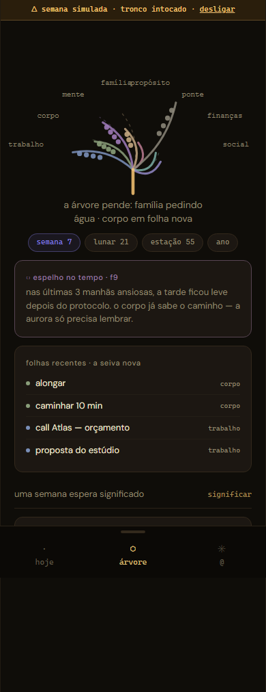
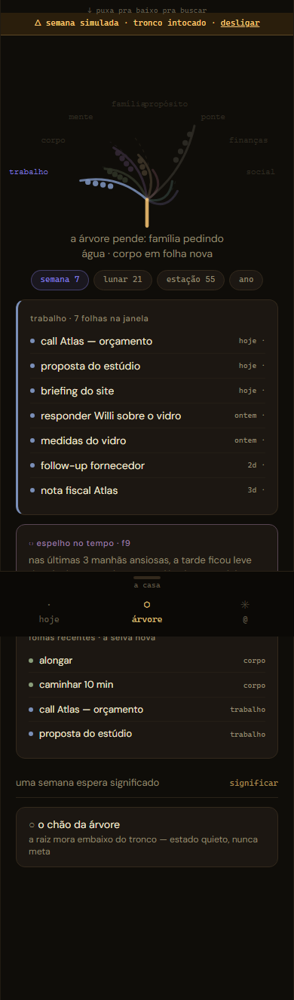

atom · onda 3 · sessão da faxina e da fila
30 Jul 2026, depois do gate. A sessão comum que o handoff
pediu: nada de gatilho, nada de morte. As cinco obras fecharam
inteiras, a fila MANCA das dissecações esvaziou — a lente que sabe de
si, o wrap sem passo oco, a árvore polida, o chão sem entulho. Cinco
commits em v2-faces, merge em master
(64f38c1), ambos pushados. O que resta na
mesa é deploy, ratificação e vida vivida.
| Obra | Estado |
|---|---|
| 1 · a faxina pós-gate (d3 · skeletons · museu) | ✓ a7ad79a · o chão limpo, a história com placa |
| 2 · a lente sabe de si (diss. 03 M4+M5) | ✓ 81177ea · sheet diz do cron + reconcile na volta |
3 · extractWhoTag com acento (pol. 7) | ✓ 8ce4b42 · André → andre, nos dois lados |
| 4 · o passo 5 do wrap vira boca (diss. 04 M4) | ✓ 736b05b · a semente nasce #seed no inbox |
| 5 · polimentos da ÁRVORE (diss. 02 pol. 7–11) | ✓ 7c58c07 · os cinco, incluindo o pol. 10 |
| Hooks | ✓ 417 testes (13 novos) · tsc · build · atos 17 cenas · visual 13/13 |
| Merge + push | ✓ master 64f38c1 · v2-faces 3b1c45f — origin confirmado |
| Deploy de edge | pendente mão do Rick — agora com três razões (ver a mesa) |
O que o gate deixou de entulho saiu: d3 +
@types/d3 fora do lockfile (só o Graph morto usava — 570 linhas
a menos), os três skeletons órfãos mortos (CardSkeleton/ListSkeleton
ficam: o AuditPanel vivo usa). E os specs históricos ganharam nota de
museu: dissecacao-01, tour e
gate-fotos fotografam o mundo de antes do gate — quem rodar à
mão vê vermelho, e o vermelho é a verdade. A dissecacao-04
ganhou nota parcial: só a cena do /projects é história.
As duas MANCAs da dissecação 03 caíram juntas.
«a casa olha sozinha todo dia às 07:15 · última volta há Nh» — estado
quieto lendo user_connectors.last_sync_at, que toda volta
(manual ou cron) carimba. Só aparece com Google ligado. Estado, nunca
promessa — o usuário finalmente tem como saber que a casa se move
sozinha.
MANCA 4 · benchmark 10 (status da última volta automática)
«Deletou lá fora → braço desliga» dependia de alguém abrir o preview à
mão. Agora a daily-digest chama a ação nova
reconcile da taxonomy-sync na volta (braço 1.5):
label registrado que sumiu desliga — e nunca cria (criar exige
assentimento). Só 404/410 explícito desliga o calendário; erro transitório
do Google não vira comando. Falha não cala o cofre.
MANCA 5 · o terceiro espelho nasceu com guarda: taxonomy-espelho.test.ts (8 testes)
extractWhoTag com acentoAndré Tanaka virava #who:andr-tanaka — o acento
era comido pelo slug. Agora o NFD translitera antes de slugificar
(André → andre, Conceição → conceicao), nos DOIS
lados: connector-service e o espelho da daily-digest
— e o guarda no series-espelho quebra se divergirem. O muro 5
valeu: o conserto é do parto novo; item já nascido fica (DP-H). O
who: da busca ensina com os valores do tronco verbatim, então
os transliterados aparecem certos por construção.
Um dos 7 passos do rito diário era uma promessa de roadmap
(«o que dorme será encontrado na Fase 5»). O cartão morreu: agora é
boca de texto que planta de verdade — captura-primeiro (D52), a
semente nasce #seed no inbox estágio 1, em silêncio (o rito não
leva toast por cima). A cena 16 do atos.spec prova o POST com tag e estágio;
a cena 15 (selo com dia vazio) segue intacta — a obra 24a não regrediu.
Os cinco do wrap da dissecação 02 — incluindo o pol. 10, que era «se o dia render». Rendeu.


A janela escolhida (semana/lunar/estação/ano) sobrevive à
navegação (mindroot.arvore-janela.v1 — preferência, não
estado de página; cena 17 prova). E o «+N mais antigas na janela», que
declarava e morria, agora expande o drill até o total honesto —
allLeaves no engine, com teste: o teto de 8 é do primeiro
olhar, nunca do caminho.
baselines da ÁRVORE refotografadas com intenção declarada — inclusive a copa, que passou por baixo do 1% (a baseline não mente)
daily-digest carrega a MENTE do cron corrigida (30 Jul de
manhã) + o braço da reconciliação + o extractWhoTag com acento;
a taxonomy-sync carrega a ação reconcile. O código
está em master; as edges em produção estão velhas.daily-digest e da taxonomy-sync — o aviso acima.atom-zeta-snowy.vercel.app.Review.tsx · lint herdado (46+3) · reconciliação rica (seguir rename pelo id).